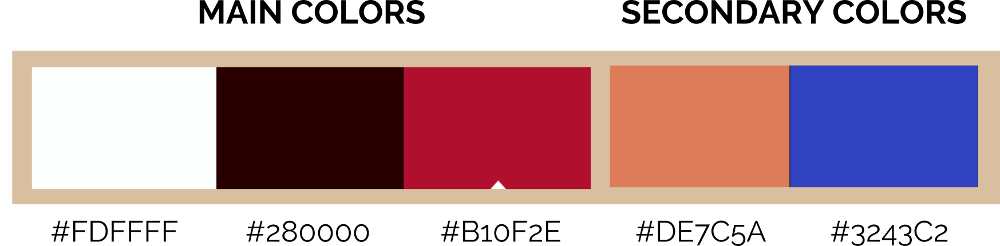
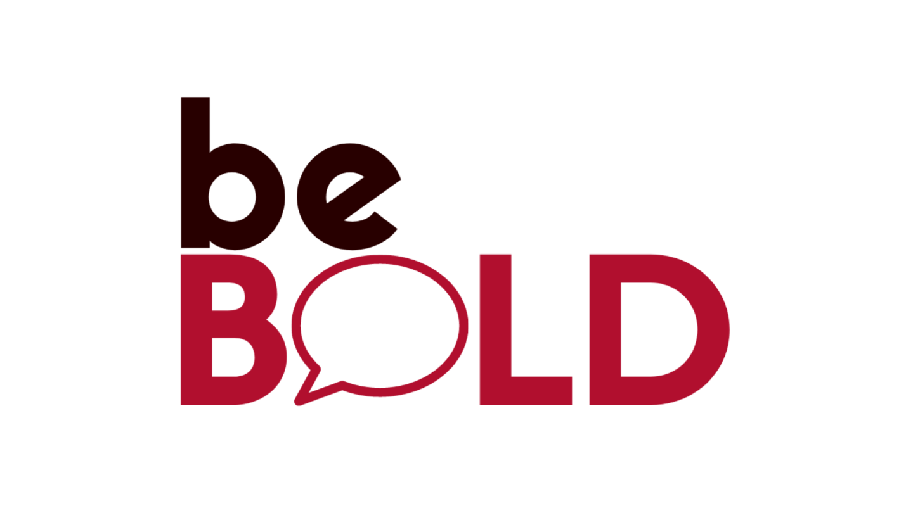
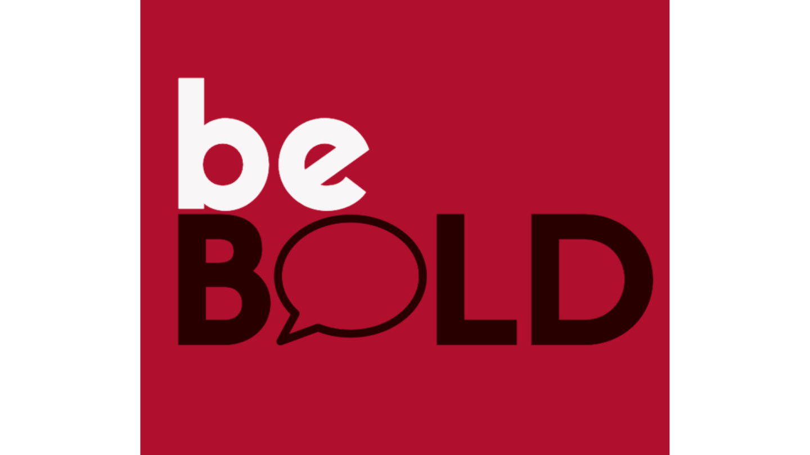
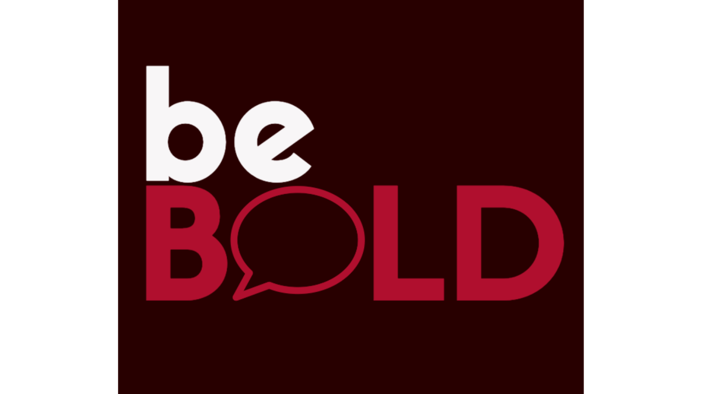

GENERAL INFORMATION
This branded website is publicly available at https://bebold-prj4.github.io/bebold/
This website was created by:
- Maja Branicka (214236)
- Maja Kowalska (211547)
- Diandzhela Mateeva (214008)
- Lorena Rajković (212987)
PRODUCTION
Design Elements
BeBold colour scheme

-
 #B10F2E
The dark red color signifies our values of confidence and persistence as it is assosiatned with energy, willpower and courage.
#B10F2E
The dark red color signifies our values of confidence and persistence as it is assosiatned with energy, willpower and courage.
-
 #3243C2
The dark blue is another strong color that stands for power and intelligence, we believe it represents our values of boldness and action.
#3243C2
The dark blue is another strong color that stands for power and intelligence, we believe it represents our values of boldness and action.
-
 #280000
The dark brown color simply matches with our two main strong colors and is used to make our color palette more warm and stable.
#280000
The dark brown color simply matches with our two main strong colors and is used to make our color palette more warm and stable.
- #DE7C5A CHANGE! The dark brown color simply matches with our two main strong colors and is used to make our color palette more warm and stable.
- #FDFFFF CHANGE! The dark brown color simply matches with our two main strong colors and is used to make our color palette more warm and stable.
Font choices
add
Logo



Add Justification for logos
User interface patterns
The structure of the navigation and content (e.g. how content units are distributed across pages)
Other units
- How does website design fit the values and personality of the brand?
- How does website design fit the marketing and communication strategy?
- How does website design help showcase the unique value proposal of the product?
Credits
- HTML templates if these are different from this one (buas-media-interactive/prj4-group-template)
- All font choices can be found on Google Fonts. We have used: ADD and LINK!.
- The source code for UX patterns other than the ones provided by the “Bootstrap” library (see getbootstrap.com/docs for a list of such patterns)
- All pictures used were extracted from: ADD and LINK. Images that were not produced by students themselves, including when crediting is not mandatory (in other words, we ask you to credit Unsplash images)
Testing Report
The goal of testing our website is to see how our target audience navigates through the website. We want to understand:
- If our design choices are visually attractive to them
- If they have an easy time navigating the website
- If they understand the purpose of our website and what our brand offers
The testing methods:
Participants:
- Gabriela Załęga – expat from Poland, age 27
- FIll in
- FIll in
- FIll in
Setting: All testing sessions have been done in person, at home or on campus.
Protocol: Sessions were recorded with a phone to see both the laptop screen and the facial expressions of the participants. The participants were asked to go over every subpage of the website and meanwhile share their thoughts on how they feel while navigating through it. At the end we asked them what improvements they suggest implementing.
Testing results:
- FIll in
- FIll in
- FIll in
- FIll in
MARKETING
Context of Campaign and Promotional Activities
Target audience: expats in their 20/30s who came to work and live in the Netherlands.
After conducting several interviews, we found out that the main problems our target group struggle with are: the organizational matters of moving to another country, cultural differences/language barrier and the feeling of loneliness/homesickness. Our interviews admitted that out of these problems the biggest issue is finding the accommodation and dealing with all the documents and organizational matters. They said that the process of becoming an expat might be overwhelming and they all felt at some point that ‘quitting’ on their goals is an easier option.
The purpose of our campaign is to spread a bold and confident mindset among new expats coming to the Netherlands. Our purpose as a brand is to push them to be persistent and act upon their goals even though it might be a struggle. After conducting research on which media channels our target group uses the most we decided to create an Instagram and Facebook page to promote our brand.
Our reach objectives:
- We want to increase brand awareness by creating and posting new content 2 times per week on each platform (Facebook, Instagram).
- We aim to reach at least 500 views on the Facebook fan page and on the Instagram page before April 10th, 2023.
Our response objectives:
- We want to have at least 100 followers on Instagram by April 10th, 2023.
- We want to have at least 100 likes on our Facebook page by April 10th, 2023.
- We want to have at least 100 likes in total on our Instagram posts by April 10th, 2023.
- We want to have at least 100 likes in total on our Facebook posts by April 10th, 2023.
Our affect objective:
- We want our audience to feel confident in accepting new challenges and embracing their fears by April 10th, 2023.
Learning Points
What have we learned?
- It is very challenging to promote a new brand without any budget
- It was easier to reach your target audience via Instagram than Facebook as the first platform gives an opportunity to follow your potential clients which is not possible with Facebook
- Number of views of video content has been higher compared to static posts
What worked and what didn’t? What went as expected and what didn’t?
- On Instagram we followed a lot of accounts that relate to the Netherlands and expat communities and some of them followed us back which was a success
- On Instagram we prepared interactive content as quizes or open questions but we didn’t get any responses which was a fail
- On Facebook we barely received any engagement
Future Planning
What would we do differently?
- We would create a Facebook group, try to search for accounts of expats and invite them to join the group. We believe that the group would create a more integrated community and people would be more willing to engage with the content we post.
- We would post every day on both Facebook and Instagram. As a new brand we realized that posting as much as possible is the best solution to spread awareness.
- We would follow even more Instagram accounts of expats and try to connect with them by leaving a comment under their photos or sending a direct message.
What would we do if the campaign would continue?
- We would apply the practices written above.
- We would introduce our product in more detail and promote its advantages.
- We would organize meetings that gather expats together where we offer informative workshops on living in the Netherlands. This type of event would help to promote our brand and gather more clients.